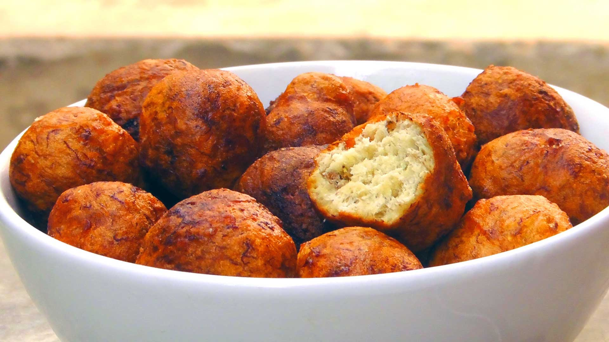

-

Mosa
Ingredients
- Ripe Plantain - 2
- Flour - 1 cup
- pepper - 1 teaspoon
- Salt - a pinch
- Vegetable Oil - 1 cup
Method of Preparation
Blend the plantain with a spoon of water. Pour in a bowl and add flour, pepper and salt. Beat thoroughly to incorporate air and allow to stand for 10 minutes.
Heat oil and fry in small round balls till golden brown.
Cool slightly and serve.